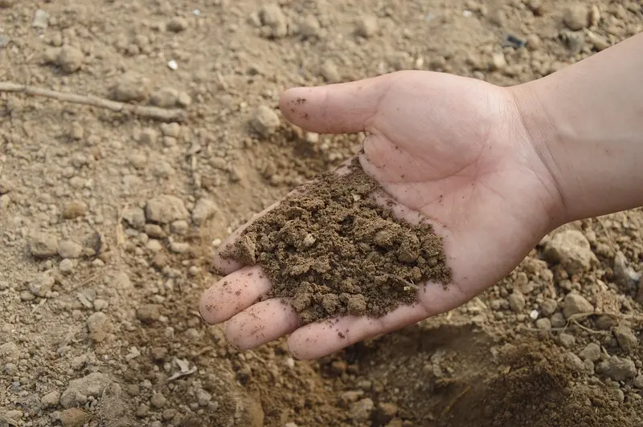

Foto: Jing / PixabayHortas Urbanas: Como cultivar em pequenos espaços
Uma sacada, um quintal pequeno ou uma janela com sol já bastam para plantar temperos e hortaliças. Veja como começar e como um grupo de vizinhos transformou um terreno parado em horta comunitária.
Ler o artigo completo
O que plantar
Comece pelo que cresce rápido e pede pouco espaço: cebolinha, salsinha, manjericão, alface e rúcula. Em vasos maiores, dá para ter tomate-cereja e pimenta.
Passo a passo
- Escolha um lugar com pelo menos quatro horas de sol por dia.
- Use vasos com furos no fundo e uma camada de pedrinhas para drenar.
- Misture terra com composto orgânico, que pode vir da sua composteira.
- Plante as mudas sem apertar demais a terra em volta.
Cuidados com a água
Regue de manhã cedo ou no fim da tarde, quando evapora menos. Água da chuva guardada em balde tampado é ótima para a horta.
No bairro da Mooca, vizinhos ocuparam um terreno parado com canteiros elevados. Hoje a colheita é dividida entre dezenas de famílias.